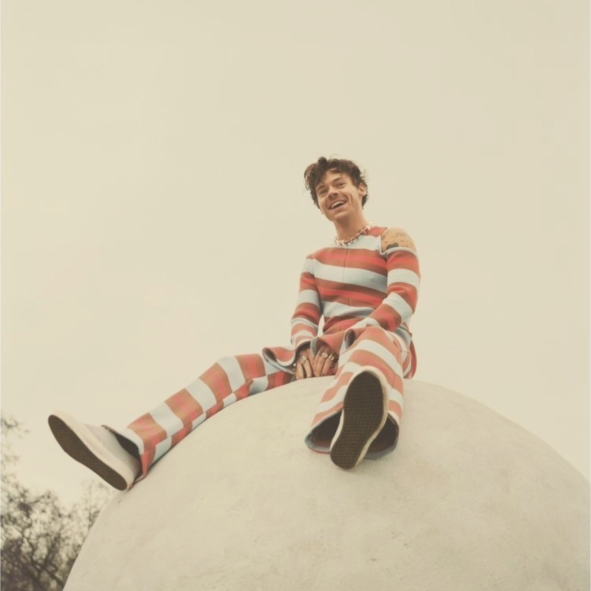

One Direction
Harry Styles began his music career in 2010 when he auditioned as a solo candidate for the seventh series of the British televised singing competition ‘The X Factor.’ Though he could not make it to the finals, he was selected along with four other fellow competitors to form a new group act for the remainder of the competition.
Styles named the group ‘One Direction.’ The group’s first song, which was also their qualifying song at ‘judge’s houses’ round, was an acoustic version of ‘Torn.’ Such was the brilliance of their performance that they soon gained popularity in the UK. ‘One Direction,’ one of the biggest contenders for the coveted title and people’s favorite, finished third in the seventh season of ‘The X Factor.’ Soon after, ‘One Direction’ was signed by Cowell’s ‘Syco Music Records’ for a contract worth £2 million.
In February 2011, the group came up with its book ‘One Direction: Forever Young’ which gave a first-hand account of the band’s ‘X-Factor’ story. It topped the ‘Sunday Times Best Seller’ list. Subsequently, they went on the ‘X-Factor Live Tour,’ performing throughout the UK. After months of recording in various cities including Stockholm, London, and Los Angeles, ‘One Direction’ came up with its debut album ‘Up All Night’ in 2011. The album debuted at number two on the ‘UK Albums Chart’ and ultimately became the UK's fastest-selling debut album of 2011. Their debut single ‘What Makes You Beautiful’ debuted at number 1 on the ‘UK Singles Chart.’ ‘Up All Night’ debuted at number one on the ‘US Billboard 200,’ selling 176,000 copies in its first week. As per reports by ‘IFPI,’ ‘Up All Night’ was the third global best-selling album of 2012 with sales of 4.5 million copies. The stupendous success of its first studio album and debut single led ‘One Direction’ to come up with its follow-up album ‘Take Me Home’ in 2012. It topped the charts in more than 35 countries. Following the footsteps of its predecessor, ‘Take Me Home’ took the number one spot on the ‘US Billboard 200’ chart, thus making ‘One Direction’ the first group to top the ‘Billboard 200’ with its first two albums. Also, it became the first boy band in US chart history to land two number-one albums in a calendar year. The band’s debut album ‘Up All Night’ and its follow up ‘Take Me Home’ became the third and fifth best-selling albums of 2012 in the United States, respectively, making the band the first act to place two albums in the year-end top five in the ‘Nielsen SoundScan’ era. Take Me Home’s lead single ‘Live While We're Young’ showed up at the top ten list in almost every country it charted in. It recorded the highest one-week opening sales figure for a song by a non-US artist.
In 2013, director Morgan Spurlock came up with a documentary of the band titled ‘One Direction: This Is Us’ which gave a sneak peek of the band’s routine. The film grossed more than $68 million worldwide. ‘One Direction’ ended the year 2013 with the release of its third studio album ‘Midnight Memories’ in November. Though it opened to mixed reviews by the critics, the album nevertheless fared well, and became the best-selling album of 2013, selling more than four million copies. A year after its third studio album, ‘One Direction’ came up with its fourth album ‘Four’ in November 2014. The album debuted at number one in 18 countries, including the United Kingdom, Australia, and the United States. Its lead singles, ‘Steal my Girl’ and ‘Night Changes’ achieved platinum status in the US and gave the band its tenth and eleventh UK top-ten hits.
Replicating the success of the band’s previous three studio albums, ‘Four’ became the band’s fourth consecutive album to sell in excess of 1 million copies in the United States. Also, it made ‘One Direction’ the first band to have its first four albums debut at number one in the United States. In March 2015, Zayn Malik, a member of ‘One Direction,’ left the group. Nevertheless, the band continued working on its fifth album, which was also the band’s final album before its self-imposed hiatus. The album ‘Made in the A.M.’ released in November 2015 to favorable reviews from critics. It debuted at number one on the ‘UK Albums Chart’ and at number two on the ‘US Billboard 200.’ Its singles, ‘Drag me Down,’ ‘History,’ and ‘Perfect’ reached the top 10 spots in a number of national charts.
2016–2018: Harry Styles and Dunkirk
 As a solo artist, Styles joined Jeffrey Azoff's Full Stop Management and talent agency CAA, signing a
recording contract with Columbia Records in the first half of 2016. Around this time, he also
launched his own record label, Erskine Records. Recording for Styles's debut album occurred throughout
2016 in Los Angeles, London and Port Antonio, Jamaica, where Styles and his collaborators had a two-month
writing retreat in the autumn. In March 2017, he announced that his first solo single, "Sign of the
Times", would be released on 7 April. The song peaked at number one on the UK Singles Chart and number
four on the Billboard Hot 100. A glam rock-influenced soft rock power ballad, it drew
comparisons to the work of David Bowie. Rolling Stone ranked "Sign of the Times" as the best song of
2017. Its music video featured Styles flying and walking on water and won the Brit Award for
British Video of the Year. In April, Styles was a musical guest on Saturday Night Live in the US and
made his debut televised solo performance in the UK on The Graham Norton Show.
Styles performing in Denver, Colorado, in 2018
His self-titled debut album was released in May 2017, whereupon it debuted at number one in several
countries, including Australia, the UK and the US. The record was influenced by 1970s soft rock and was
described by Variety as a "classic cocktail of psychedelia, Britpop, and balladry". It received
generally favourable reviews from critics and was included in several publications' lists of the
best albums of 2017. Harry Styles yielded two more singles, "Two Ghosts" and "Kiwi". The
film Harry Styles: Behind the Album, which documented the writing and recording process for the album, was
released in May exclusively on Apple Music. Styles embarked on his first headlining concert tour, Harry
Styles: Live on Tour, from September 2017 through to July 2018, performing in North and South Americas,
Europe, Asia, and Australia.
Styles made his feature film debut in Christopher Nolan's war film Dunkirk, in July 2017, playing a British
soldier named Alex in the Dunkirk evacuation during World War II. He appeared alongside an ensemble cast
which included Fionn Whitehead, Tom Glynn-Carney, Jack Lowden, Kenneth Branagh, Cillian Murphy, Mark
Rylance, and Tom Hardy. Styles won the part over "thousands of young men"; Nolan later admitted he
was unaware of the extent of Styles' fame and that he was cast "because he fit the part wonderfully and
truly earned a seat at the table".The Daily Telegraph film critic Robbie Collin praised Styles for
his "bright, convicted, and unexpectedly not-at-all-jarring performance".
In November 2017, BBC One broadcast Harry Styles at the BBC, a one-hour television special presented by Nick
Grimshaw. At 2017 ARIA Music Awards, Styles received the Best International Artist award. He
guest-hosted The Late Late Show with James Corden in December. Together with Jack Antonoff and Ilsey
Juber, Styles co-wrote "Alfie's Song (Not So Typical Love Song)", performed by the band Bleachers, for the
soundtrack of the film Love, Simon (2018). He also served as an executive producer on the CBS sitcom
Happy Together, which premiered in October 2018 and was inspired by his time living with television producer
Ben Winston. In 2018, Styles began modelling for the Italian fashion house Gucci, appearing in several
campaigns for the brand.
As a solo artist, Styles joined Jeffrey Azoff's Full Stop Management and talent agency CAA, signing a
recording contract with Columbia Records in the first half of 2016. Around this time, he also
launched his own record label, Erskine Records. Recording for Styles's debut album occurred throughout
2016 in Los Angeles, London and Port Antonio, Jamaica, where Styles and his collaborators had a two-month
writing retreat in the autumn. In March 2017, he announced that his first solo single, "Sign of the
Times", would be released on 7 April. The song peaked at number one on the UK Singles Chart and number
four on the Billboard Hot 100. A glam rock-influenced soft rock power ballad, it drew
comparisons to the work of David Bowie. Rolling Stone ranked "Sign of the Times" as the best song of
2017. Its music video featured Styles flying and walking on water and won the Brit Award for
British Video of the Year. In April, Styles was a musical guest on Saturday Night Live in the US and
made his debut televised solo performance in the UK on The Graham Norton Show.
Styles performing in Denver, Colorado, in 2018
His self-titled debut album was released in May 2017, whereupon it debuted at number one in several
countries, including Australia, the UK and the US. The record was influenced by 1970s soft rock and was
described by Variety as a "classic cocktail of psychedelia, Britpop, and balladry". It received
generally favourable reviews from critics and was included in several publications' lists of the
best albums of 2017. Harry Styles yielded two more singles, "Two Ghosts" and "Kiwi". The
film Harry Styles: Behind the Album, which documented the writing and recording process for the album, was
released in May exclusively on Apple Music. Styles embarked on his first headlining concert tour, Harry
Styles: Live on Tour, from September 2017 through to July 2018, performing in North and South Americas,
Europe, Asia, and Australia.
Styles made his feature film debut in Christopher Nolan's war film Dunkirk, in July 2017, playing a British
soldier named Alex in the Dunkirk evacuation during World War II. He appeared alongside an ensemble cast
which included Fionn Whitehead, Tom Glynn-Carney, Jack Lowden, Kenneth Branagh, Cillian Murphy, Mark
Rylance, and Tom Hardy. Styles won the part over "thousands of young men"; Nolan later admitted he
was unaware of the extent of Styles' fame and that he was cast "because he fit the part wonderfully and
truly earned a seat at the table".The Daily Telegraph film critic Robbie Collin praised Styles for
his "bright, convicted, and unexpectedly not-at-all-jarring performance".
In November 2017, BBC One broadcast Harry Styles at the BBC, a one-hour television special presented by Nick
Grimshaw. At 2017 ARIA Music Awards, Styles received the Best International Artist award. He
guest-hosted The Late Late Show with James Corden in December. Together with Jack Antonoff and Ilsey
Juber, Styles co-wrote "Alfie's Song (Not So Typical Love Song)", performed by the band Bleachers, for the
soundtrack of the film Love, Simon (2018). He also served as an executive producer on the CBS sitcom
Happy Together, which premiered in October 2018 and was inspired by his time living with television producer
Ben Winston. In 2018, Styles began modelling for the Italian fashion house Gucci, appearing in several
campaigns for the brand.
2019–2021: Fine Line
"Lights Up", the lead single from Styles's second album, Fine Line, was released in October 2019, debuting at number three in the UK. The song featured a "soft-touch re-entry into the pop slipstream", according to music writer Jon Caramanica. Styles served as both host and musical guest on Saturday Night Live in November. The second single preceding Fine Line, "Adore You", was released in December, peaking at number seven in the UK and at number six in the US. That month, Styles again guest-hosted The Late Late Show with James Corden.
Styles performing on Love On Tour in 2021
Fine Line was released on 13 December. The album was recorded at the Shangri-La studio in Malibu, California with the same production team behind Styles's debut album and featured a similar sound to Harry Styles while also incorporating elements of funk and soul. It received generally positive reviews from critics. The album peaked at number two in the UK and topped the US charts, breaking the record as the biggest sales debut from an English male artist in the US since Nielsen SoundScan began electronically tracking sales data in 1991. Singer-songwriter Stevie Nicks, who referred to Styles as "the son [she] never had", likened Fine Line to Fleetwood Mac's album Rumours and commented that it inspired her to write new music. Rolling Stone ranked it at number 491 in their 2020 list of the "500 Greatest Albums of All Time". Five other singles, "Falling", "Watermelon Sugar", "Golden", "Treat People with Kindness" and the title track, were released from the album. "Watermelon Sugar" became Styles's fourth UK top-ten single, peaking at number four, as well as his first number-one single in the US. A tour to support Fine Line, entitled Love On Tour, which was originally set to take place throughout 2020, was postponed until 2021 due to the COVID-19 pandemic.
At the 2020 Brit Awards, Styles was nominated for British Male Solo Artist and British Album of the Year. In March 2020, he performed an NPR Tiny Desk concert, and in July, he narrated a bedtime story titled Dream with Me for the relaxation app Calm. Later that year, Styles won the Favorite Pop/Rock Album award for Fine Line at the 48th American Music Awards, the Best International Artist award at the 34th ARIA Music Awards, and the Chart Achievement Award at the 27th Billboard Music Awards. He was also named Variety's Hitmaker of the Year. At the 63rd Annual Grammy Awards in March 2021, he received three nominations for Best Pop Vocal Album (Fine Line), Best Pop Solo Performance ("Watermelon Sugar") and Best Music Video ("Adore You"), winning for Best Pop Solo Performance. "Watermelon Sugar" also earned Styles his second Brit Award for British Single of the Year during the 2021 ceremony. At the 2021 Ivor Novello Awards, "Adore You" won the award for Most Performed Work. Styles made a cameo appearance as Eros / Starfox, brother of Thanos, in the mid-credits scene of the Marvel Cinematic Universe superhero film Eternals, which was released in November 2021. He launched his cosmetics brand, Pleasing, that month.
2022: Harry's House and further acting roles
The lead single from Styles' third studio album Harry's House, titled "As It Was", was released on 1 April 2022. It debuted atop the UK and US charts, becoming his second solo number one single in both countries. Styles headlined the Coachella Valley Music and Arts Festival later that month, ahead of the release of Harry's House on 20 May. He is also set to star as Jack in the upcoming psychological thriller film Don't Worry Darling, directed by Olivia Wilde, and will portray the titular character in My Policeman, a film adaptation of the 2012 novel of the same name.